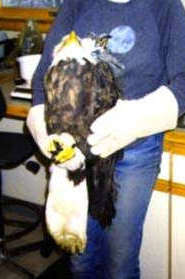
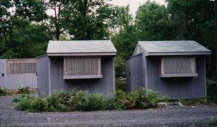

The Delaware Valley Raptor Center, located in Milford, PA, is a private, not-for-profit, tax-exempt state and federally licensed rehabilitation organization dedicated to the rehabilitation and conservation of birds of prey (hawks, eagles, owls, falcons, and vultures). Our goals are to provide humane professional care for orphaned, ill, and injured raptors so they can ultimately be returned to the wild, healthly and no longer dependent upon humans for survival. We also strive to foster a greater appreciation and respect for all wildlife through public education programs and the publication of the DVRC Journal.
The DVRC Journal is distributed to all DVRC members twice annually. It is a 16 page magazine with articles on natural history, environmental issues, raptor rehabilitation techniques, raptor profiles, timely stories including birds of prey in history and art, and more. (See Featured Articles for articles from past Journal issues.)
To have a close encounter with some of our Birds of Prey be sure to check out our Upcoming Public Raptor Programs. Or become a Memberand take a tour of our Cummins Hill site. DVRC receives no federal or state funding. Primary funding for the center comes from education programs and member donations. The center also has an adoption program and gift items for sale. DVRC Membership Application and DVRC Adoption Program Application now available online!
Indoor facilities include two isolation areas with several treatment cases of varying sizes for critical patients. Our clinic includes x-ray and darkroom, lab for blood and fecal sample analysis, and space for surgery.
Our staff consists of 3 state and federally licensed rehabilitators who staff the center 24 hours a day, 7 days a week. All lab work, drug doses, external immobilization of fractures, x-rays, medicating, and day to day care of patients is provided by these 3 individuals. Surgical fixation of fractures is performed by a veterinarian trained for avian surgery. Occasional consults for eye disease are provided by a local ophthamalogist.
Send membership, adoption, and public education program inquiries to:
Delaware Valley Raptor Center
416 Cummins Hill Road
Milford, PA 18337
Email us at dvraptors@yahoo.com
If you find an injured, sick or orphaned bird of prey,
call us at (570) 296-6025.
Embossed eagle background image on home page created by Nan.Web site design created and maintained by Joe.Contents gathered or written by and site maintained by Jan. Please notify us of any broken links or errors at dvraptors@yahoo.com
The contents of the entire site are the copyrighted © material of DVRC. Illustrations are also copyrighted © by the artist and can be used only with permission from the artist. Articles may be used for your personal use, or reproduced provided that credit is given to the author and to the Delaware Valley Raptor Center, Milford, PA. Any other use requires the permission of DVRC.
Some graphics within site from Clip Art Warehouse and ABTA (Absolute Background Textures Archive - free freely distributable backgrounds).
Owl graphics from.